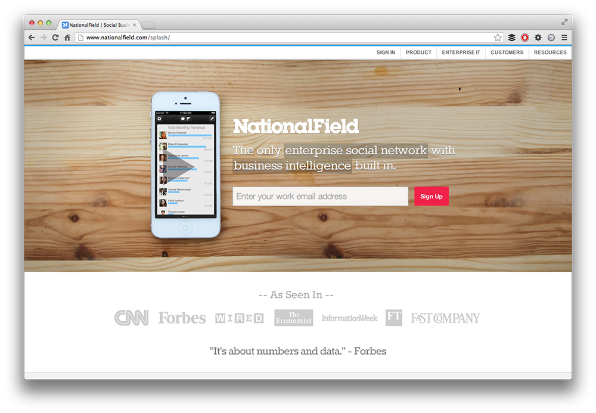
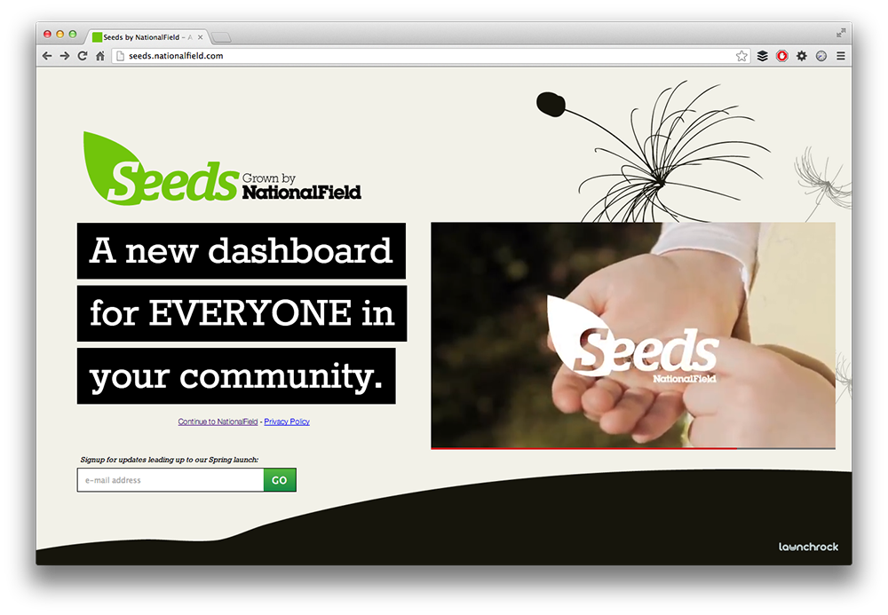

National Field
National Field is a Washington, D.C. based start-up that began on the 2008 Obama Campaign trail. They developed a metrics-driven, metrics-transparent private social network to hold campaigners accountable and maximize their grassroots efforts. After the campaign, they adapted their product for corporate clients. When I joined their 15 person team in 2012, they were pivoting and I helped in the transition to develop features, assets, and tools for existing clients while we crafted a strategy for gaining new ones. Below is a promo video we made for the corporate product.
Developer's Platform: NationalField Labs
Existing client's included large organizations with their own developers. Many requests came in to open the API so that they could develop their own applications from it. I spearheaded this project, designing and developing National Field Labs.
Pivot: A Return to Politics & Goes Mobile
Towards the end of my time with National Field, we began to develop Seeds, a mobile, grassroots organization tool. See the promo video below.
